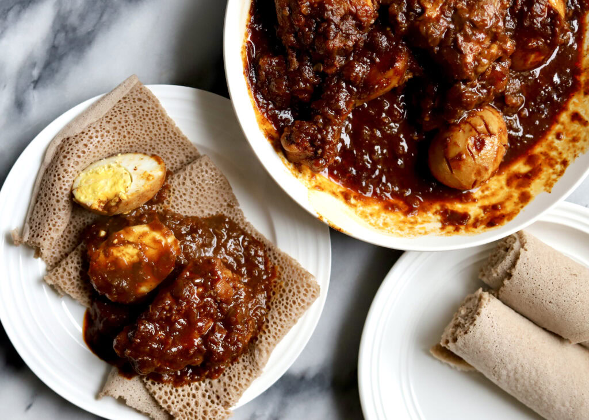

East Africa · Ethiopia
Doro Wat
Ethiopia's best-loved stew: chicken and whole eggs cooked slowly in a deep red sauce of onions, berbere and niter kibbeh (spiced butter). It is the centrepiece of holiday feasts such as Genna and Fasika, scooped up with injera.
Time 2 hr
Serves 6

Ingredients
- Chicken thighs and drumsticks 1.2 kg
- Red onions, finely chopped 4 large
- Niter kibbeh (spiced butter) 0.5 cup
- Berbere spice 3 tbsp
- Garlic and ginger, minced 2 tbsp each
- Hard-boiled eggs 6
- Lemon juice, salt to taste
Method
1. Cook the onions low and slow
Cook the onions in a dry pot over low heat, stirring, for about 30 minutes until soft and deep brown. This is the base of the stew.
2. Bloom the spices
Stir in the niter kibbeh, garlic, ginger and berbere. Cook for 5 minutes until the sauce turns dark red and smells fragrant.
3. Simmer the chicken
Add the chicken and a cup of water. Cover and simmer for about 45 minutes, stirring now and then, until the chicken is tender and the sauce is thick.
4. Add the eggs and serve
Score the peeled eggs, add them to the stew and simmer 10 more minutes. Season with lemon and salt, then serve on injera.
Watch it made
Nutrition per serving, about 350 g.
| Nutrient | Amount |
|---|---|
| Calories | about 450 kcal |
| Protein | 35 g |
| Carbohydrates | 12 g |
| Fat | 28 g |